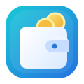

WDompet
Kelola Keuangan
Lebih Mudah
V2.5.0
⇩
Beranda
Transaksi
Tambah
Anggaran
Laporan
Sumber Dana
☼ Tema
SUMBER DANA
Kelola Sumber Dana
Bank, e-wallet, tunai, dan sumber dana lainnya.
Tambah Sumber Dana
Bank
E-Wallet
Tunai
Lainnya
Simpan Sumber Dana
Transfer Antar Sumber Dana
Dari
Ke
Nominal
Tanggal
Keterangan
Simpan Transfer
Daftar Sumber Dana
0 sumber dana